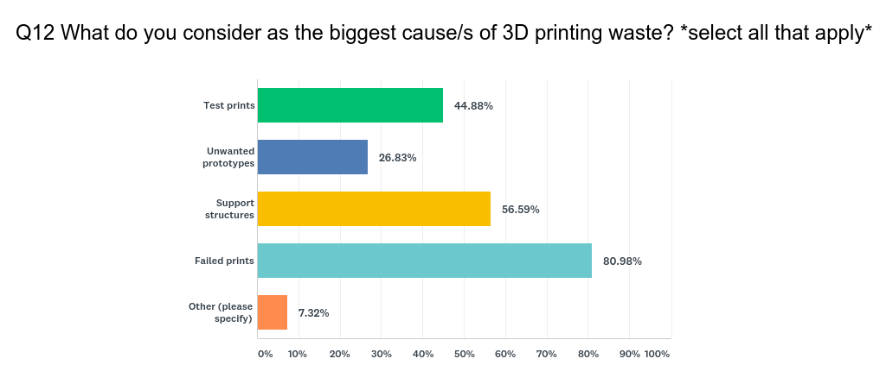
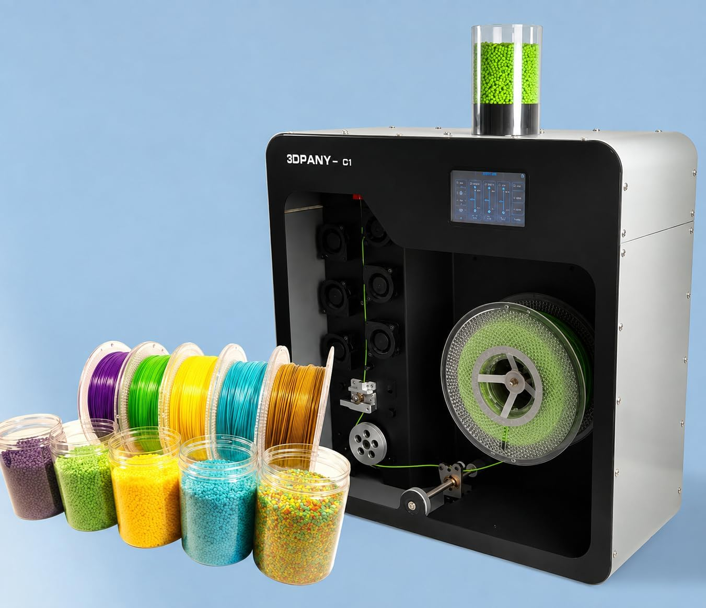

3D printing is essential for creating physical objects. It allows us to create component parts, models, and anything else you can imagine through your CAD software. There is something we still don't take into consideration: how much plastic waste do we give off from 3D prints? People can take this material and get it recycled or re-pipped for reuse, but we throw it away instead, letting it take off to oceans and perhaps natural environments.
ABS waste is hurting the environment.
The Severity of it All
Based on Filamentive, 33% of all 3D prints become waste, which generates approximately 379,000 kg of plastic waste. This can happen to anyone with a 3D printer, whether at home, at manufacturing, or school, which can cause severe environmental waste.
Writers Ruoyu Song and Cassandra Telenko wrote about this problem too in their article Material Waste of Commercial FDM Printers Under Realistic Conditions, specifically on how FDM becomes material waste, stating that "34% of the plastic waste in the open studio was wasted." This meant "the mass of material lost to failed builds was about 2.22 times what might be estimated in a process study." According to them, the amount of plastic and 3D prints is much higher than we anticipate, which leaves printing waste unnoticed, resulting in the amount of waste to increase. There are multiple forms of filament that can cause this problem, including unused/damaged filament, overheated platforms, unsupported part shapes, layer shifts, support material, printer stops, tight or loose calibrations, and skipped layers which not only contributes to plastic waste, but also means that you're using up a lot of filament.
Why is it so Hard?
Filamentive also brushed on this in The 3D Printing Waste Problem, who sell multiple materials of filament, stating that "whilst at its core 3D printing is fundamentally less wasteful than traditional, subtractive manufacturing methods, the use of plastic as a feedstock has the potential to exacerbate the global plastic problem unless we can find sustainable solutions." There was something that was meant to be less wasteful in terms of material, but it wasn't completely wasteless. In fact, a survey shows that the biggest cause of 3D printing waste are failed prints, followed by support structures and test prints. These issues are contributing to more plastic waste, but those who are suffering from 3D printing conflicts are using up filament, especially if you have failed prints.

Figure 1: A poll from Filamentive (Select all that apply) descriping what filament results are wasted.
There are some solutions for subtracting the amount of 3D printing waste you have from FormFutura, where one of them is to "recycle your failed 3D prints and excess waste." This can be through recycling programs; however, there are products that allow you to take these failed 3D prints and remold them back into filaments. This only focuses on remolding, leaving the other part of recycling out of the picture, which is getting it ready for remolding. This involves getting the 3D print broken down into pieces to make re-molding easier, which is generally done through hammering or power tooling the 3D print, which can be dangerous and time consuming.

Figure 2: An example by 3DPANY of a filament extruder that remolds plastic into filament.
Conclusion
Forests are being torn down, waters are being polluted, and landfills are getting bigger from useless 3D prints. Recycling these plastics will help reduce our waste count by a lot, and with the stakes high, making recycling easier matters. If recycling can be made easier, it will be more accessible and efficient for those who own at least one 3D printer.